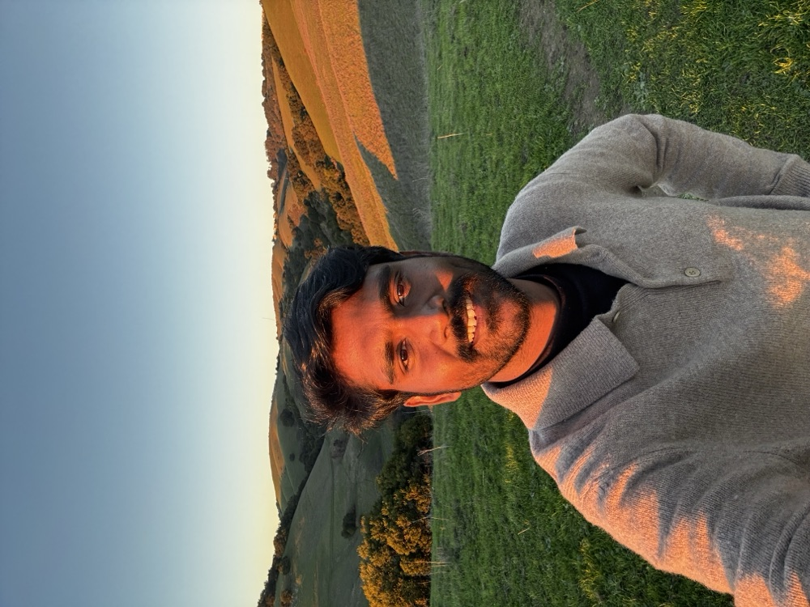

i'm just someone who loves building and creating things for the people around me.
i started my first sales job when i was 12, selling pirated pc games to my friends in school. later, i created my first website, danielriju.blogspot.com (no longer active), when i was 12, and used it to host these games for free while making money through ads.
i'm currently the working on noolio.
before that, i founded mithram. we built a device that could sit in a firefighter's rig, transcribe all radio communications in real time, flag emergencies or maydays (when a firefighter's life is in danger), and alert the commander so no firefighter's life would be lost.
while running the company, i talked to 100+ firefighters across california (living every kid's dream), and was in a fire station almost every day. we raised funding from pear and from stanford's launchpad teaching team, and built v1 of the product in about 5 weeks.
i worked on it for 1.5 years, then left mithram for a variety of reasons.
mithram was special. it's a sanskrit word meaning "friend." i'm really proud of this, and my dad went a bit crazy over it, since he was a firefighter himself.
i did a lot of other things before that, mostly research. i also have a pretty unusual path into silicon valley. after my master's in econometrics, i did agro economics research for a while, followed by supply chain research at iima (focused on ml and optimization). after that, i moved into political science and computer vision research at stanford.
when i say i'm from chennai, india, people assume i went to an iit (the ivy league of india). when i say no, they get curious and ask how i ended up where i am. it's funny. this is my usual answer how i ended up here:
"i'm an opportunistic explorer, searching for anything and everything of value, without a care for what might be found. to be a treasure hunter, you have to collect as many stepping stones as you can, because you never know which one might lead somewhere valuable." — from the book why greatness cannot be planned
i learn a lot, fail a lot, and in the end, it is all fun.

p.s: if you wanna contact me ping daniel@praburaj.com, i generally respond to most emails with a clear ask.